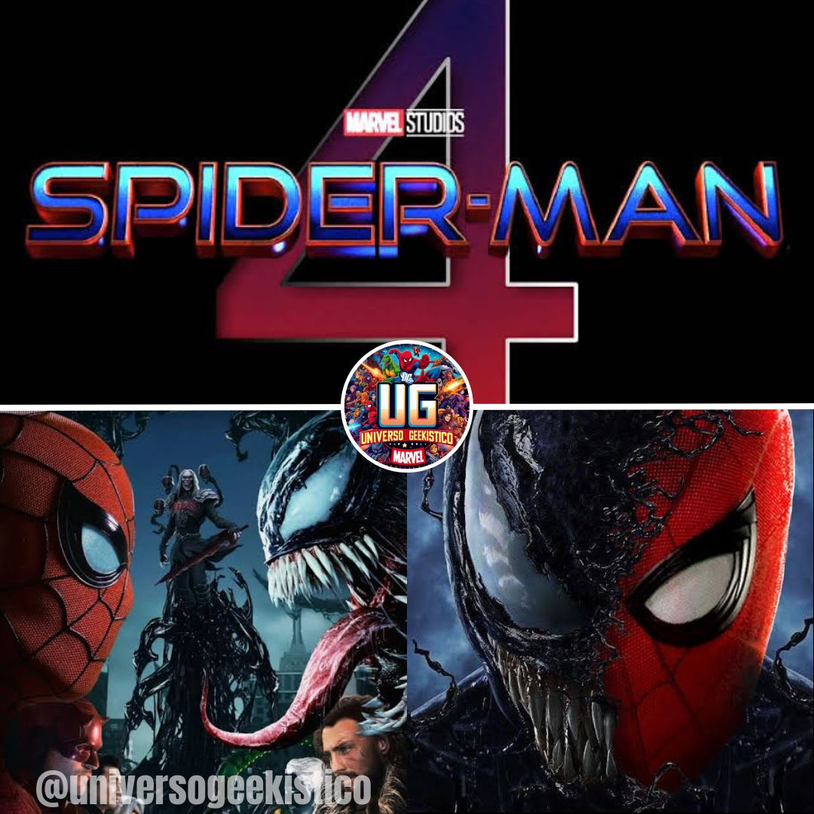

HOMEM-ARANHA 4 TERÁ TRÊS VILÕES CONFIRMADOS — VEJA QUEM SÃO!

Por Matheus Barbosa da Silva - 21/05/2025 11:03
 Universo Geekistico
Universo Geekistico


Saiba mais
Depois de dar voz ao personagem em Homem-Aranha no Aranhaverso, Nicolas Cage está de volta como o Spider-Noir— agora em carne e osso. Durante seu evento Upfront, a Amazon revelou o primeiro teaser trailer da aguardada série Spider-Noir, produção que estreia em 2026, com exibição inicial no MGM+ e distribuição global pelo Prime Video no dia seguinte. 🕷 O retorno do Aranha Noir Baseada nos quadrinhos Spider-Man Noir, a série mergulha na Nova York dos anos 1930 e traz Cage no papel de um detetive particular envelhecido e amargurado, o único super-herói da cidade. O teaser, em preto e branco, mostra uma atmosfera sombria, com narração melancólica e cenas de ação estilizadas. “Espero que encontrem alguém”, diz o personagem, sugerindo a luta interna do herói com seu passado. 🎬 Formato inovador e estreia A série será oferecida em duas versões visuais: uma em preto e branco e outra em cores, uma proposta inédita para o Prime Video. 🌟 Elenco e equipe de peso Além de Nicolas Cage, Spider-Noir conta com um elenco recheado de estrelas: ▫️Lamorne Morris ▪️Brendan Gleeson ▫️Abraham Popoola ▪️Li Jun Li ▫️Karen Rodriguez ▪️Jack Huston